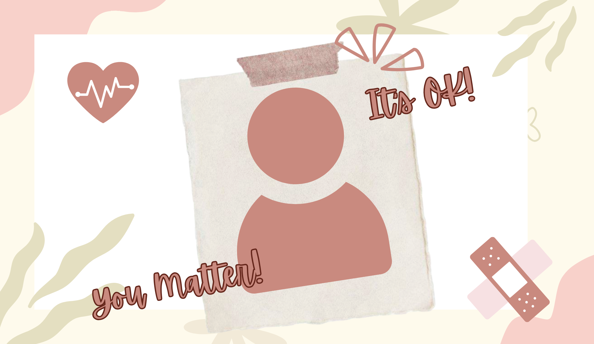
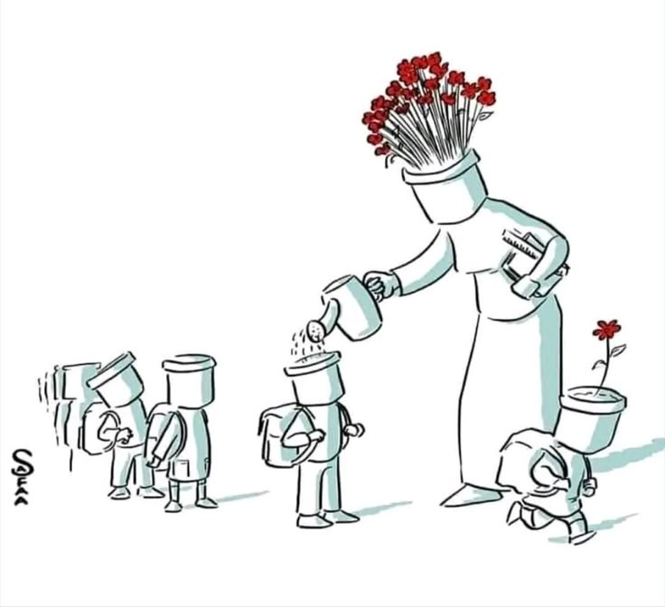

Hi! I'm Majongg from the Philippines!!I choose this topic so that we
can acknowledge that therapy is still an option! If more people knew about this, more people can put words
into action! In our society, some people think that our emotions is not valid and think is just an act but
it is not.This website talks about spreading awareness about Online Therapy and will help you understand our
situation in our society and to encourage others to prioritize their well-being and break the silence around
mental health struggles. Everyone, you have the right for people to listen to what you think and feel.

Why this website is worth reading about is because I believe mental health is just as important as physical
health, yet many people still hesitate to seek help due to stigma, lack of access, or limited resources.
Online therapy provides a convenient and accessible way for individuals to connect with professionals,
especially for those who live far from clinics or feel uncomfortable with face-to-face sessions. By
promoting awareness, I hope to let people know that support is available, that it is okay to ask for help,
and that seeking therapy is a sign of strength rather than weakness. This choice reflects my desire to
encourage others to prioritize their well-being and break the silence around mental health struggles.

- Online therapy makes mental health a priority.
- Awareness can be spread through social media, schools, and organizations.
- Educating people about its benefits and process encourages participation.
- Provides a private and flexible way to get support.
- More accessible, affordable, and convenient.
- You can find therapist that suits you the best to feel comfortable.
- Easier for people who feel shy or intimidated to open up.
- With technology advancing, it can reach more people who need support.